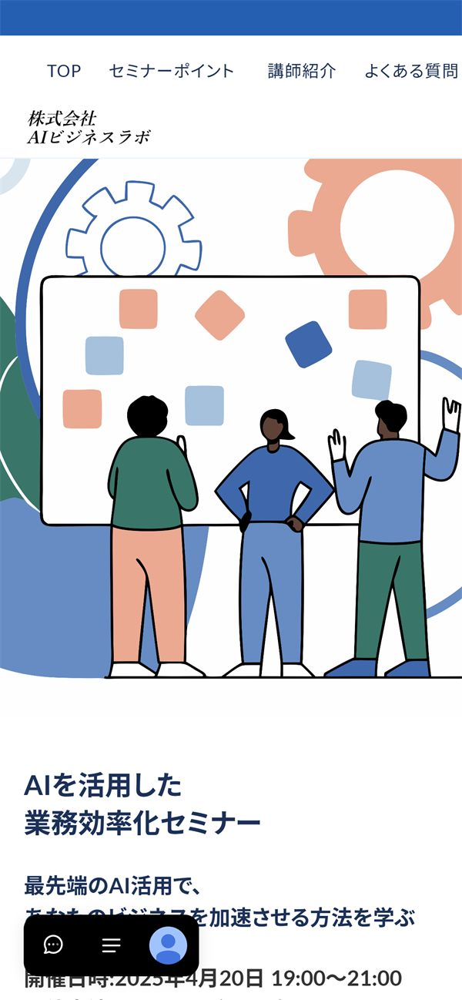

NO.04
ケーススタディ／STUDIO
AI業務効率化セミナー LP
AI活用コンサル事業を行う「株式会社AIビジネスラボ」から、セミナー告知LPの制作を依頼された想定のケーススタディです。要件定義書をもとに提案文を書き、ノーコードツール「STUDIO」で1ページのLPを制作しました。


01概要
「AIを活用した業務効率化セミナー」の申し込みを集めるためのLPです。ターゲットは20〜40代のビジネス層で、専門的な内容でも理解しやすく、そのまま申し込みまで進めることを目指しました。
画像などの素材は支給されたもので、レイアウトと配色などのデザインは自分で考えました。
STUDIOを選んだのは、公開後のテキスト修正や画像の差し替えを、Web制作に詳しくない方でも比較的簡単に行えるからです。セミナーの日程や講師が変わっても、運用しやすいサイトにしています。
02提案内容
-
意識したこと
- 信頼感のあるデザイン
- 専門的な内容でも理解しやすい情報整理
- スマホでも見やすいレイアウト
- 申し込みにつながりやすい導線設計
-
掲載内容（要件定義書より）
- セミナー概要
- 講師紹介
- 受講者の声
- FAQ
- 申し込みフォーム
-
スケジュール（約1〜2週間）
- 1〜2日ヒアリング
- 3〜5日デザイン調整
- 3〜5日STUDIO実装
- 2日最終確認・修正
-
やり取りの方針
Web制作に詳しくない方にも安心してもらえるよう、丁寧なヒアリングとこまめな連絡を大切にすると伝えました。連絡手段はChatwork・Slack・メールなど、相手の希望に合わせる提案です。
03ページの構成
- メインビジュアル セミナー名・開催日時・開催方法・参加費・対象者
- セミナーのポイント セミナーで学べる3つのポイント
- 講師紹介 講師のプロフィール
- よくある質問 申し込み前の疑問に答えるFAQ
- 受講生の声 受講した方の感想
- お問い合わせ 申し込み・お問い合わせフォーム
04工夫した点
-
POINT 01
最初の画面で開催時期が分かる
メインビジュアルに開催日時を入れ、開催方法・参加費・対象者もまとめました。スクロールしなくても「いつ開催されて、自分が参加できるか」をすぐに判断できます。
-
POINT 02
講師の紹介を大きく見せる
セミナーは「誰から学べるか」が申し込みの決め手になるので、担当講師の紹介を大きく配置しました。講師の経歴が目に入ることで、内容への信頼感につながります。
-
POINT 03
不安を解消してから申し込める順番
申し込みフォームは、よくある質問と受講生の声の下に置きました。疑問が解消され、参加した人の感想を読んで「受けてみたい」と思ったところで、そのまま申し込めます。